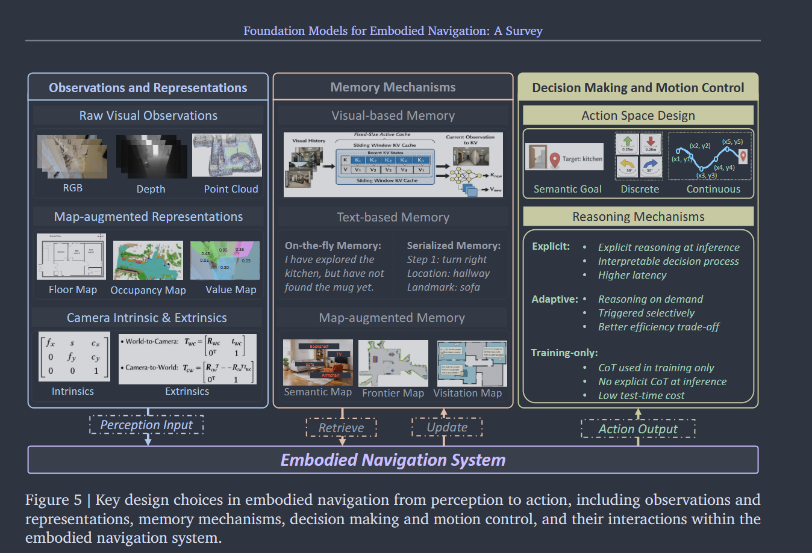
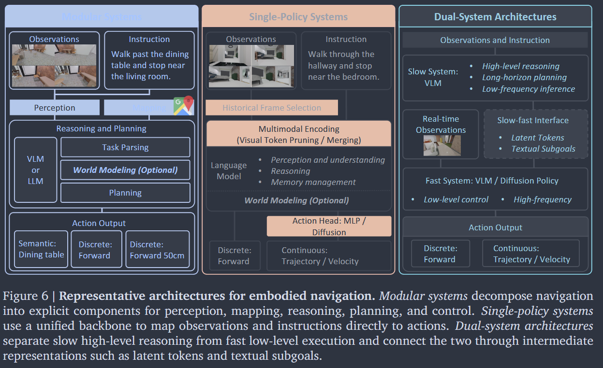
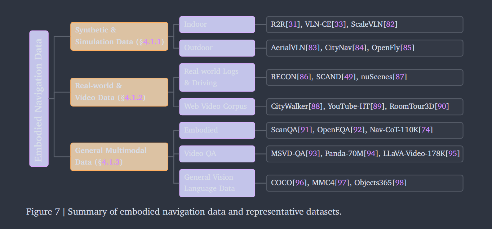
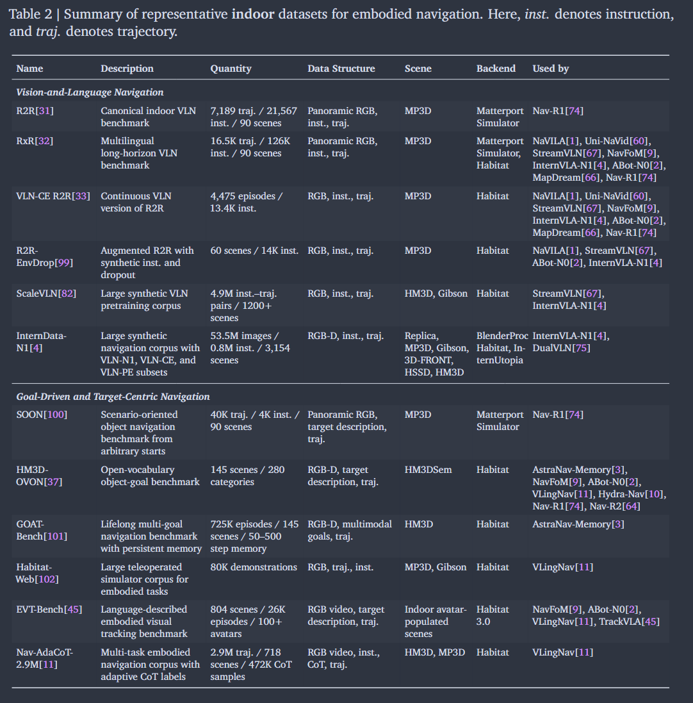
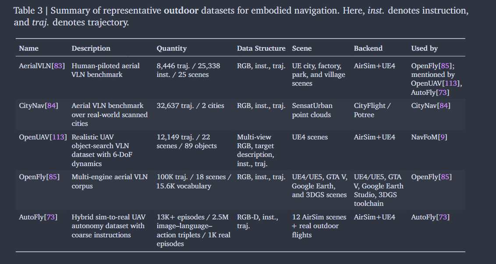
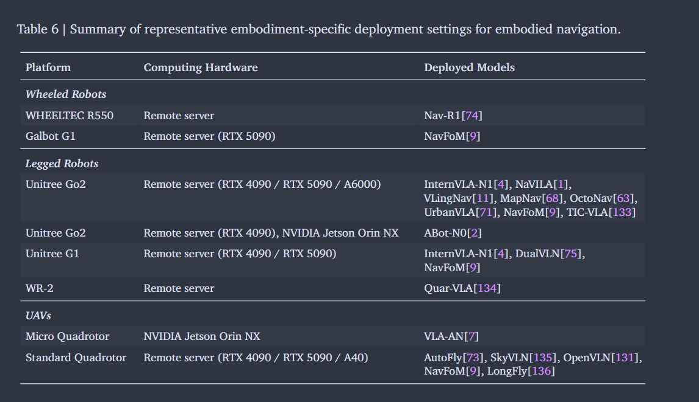
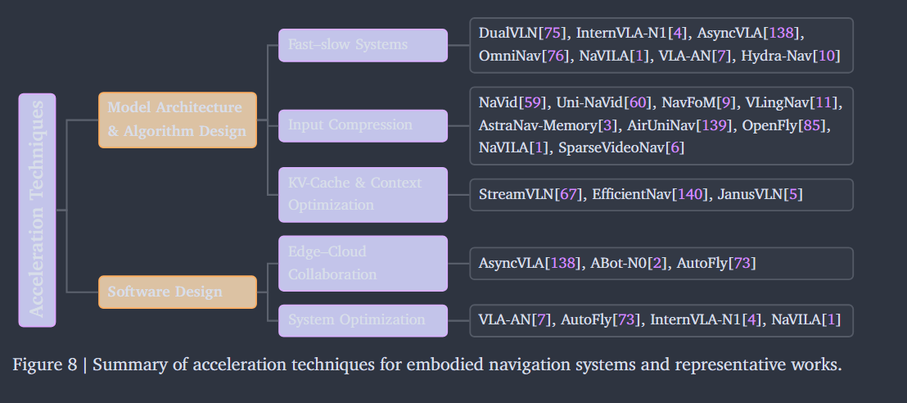
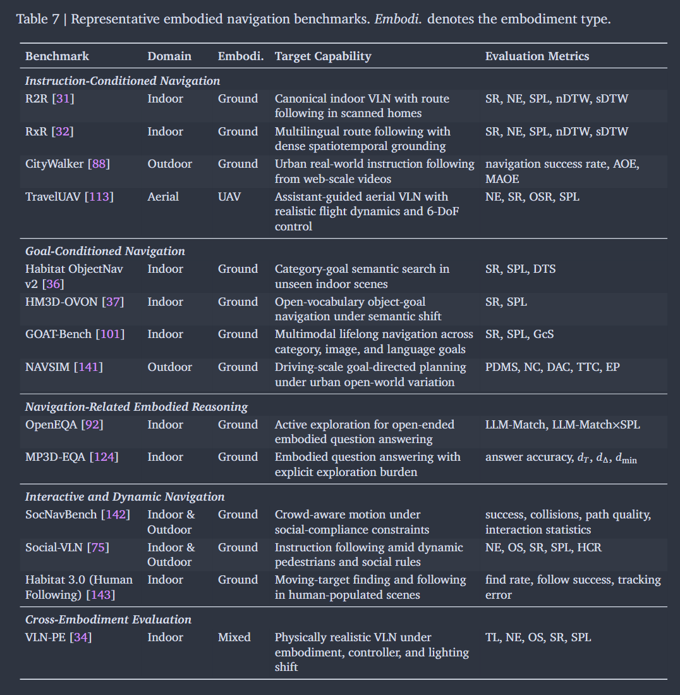

Foundation Models for Embodied Navigation: A Survey
Foundation Models for Embodied Navigation: A Survey
Foundation Models for Embodied Navigation: A Survey
⚙️ Metadata
- Item Type: journalArticle
- Author: [[Longxi Gao]], [[Weikai Xie]], [[Haoze Qian]], [[Rongjie Yi]], [[Shihe Wang]], [[Jiaye Song]], [[Dongqi Cai]], [[Jinliang Yuan]], [[Yunhao Liu]], [[Xuanzhe Liu]], [[et al.]]
- Date Added: 2026/5/4 16:12:19
- URL:
- Cite key:
- Journal:
- Journal Tags:
- Publication Date:
- Tags: #, #zotero
- PDF Attachments: Gao 等 - Foundation Models for Embodied Navigation A Survey.pdf
- Related Items: 无相关条目
📜 Abstract
The remarkable advancements of embodied navigation, the process of physically situated agents perceiving and reasoning through egocentric observations to reach target locations, have recently been reshaped by the emergence of foundation models. Departing from traditional, task-specific policies trained from scratch on limited datasets, this new paradigm leverages the reasoning and multimodal capabilities of Large Language Models (LLMs), Vision-Language Models (VLMs), and Video Generation Models (VGMs), achieving superior generalization and flexible decision-making in unseen environments. For the first time, this survey systematically reviews the landscape of foundation models for embodied navigation, focusing on systems where these models play a central role in perception, long-horizon memory management, and action generation. The survey aims to categorize and interpret existing embodied navigation research through the lens of design paradigms, data sources, and training strategies. Through this analysis, we offer a synthesized outlook on the evolution of navigation brains, highlight the bottlenecks of dataset bias, and contribute guidance for future research, hoping to bring the field closer to robust, general-purpose embodied intelligence.
📚 Zotero links
Notes
-
Problem Formulation and Taxonomy
- Perceiving surroundings
- Reasoning about a navigation objective
- Make sequential decisions and execute actions
semantic navigation- VLN, ObjectNav, RegionNav
geometric navigation- PointNav, ImageNav, FrontierNav
interactive navigation- Embodied Visual Tracking, SocialNav, Multi-Agent Navigation
2. Embodiment Taxonomy
wheeled robots
·for flat and structured environments
legged robots
·for wheel-unfriendly environments
UAV
·fully 3D space, move freely in both vertical and horizontal directions
3. Key Design Dimensions

(1)Observations and Representations
·Raw Visual Observations - RGB-based observations (Ego-centric or Multi-view), Depth-aware observations - depth-maps incorporated
·Map-augmented Representations - BEV - Floor maps, Occupancy maps, Value maps
·Camera Intrinsics and Extrinsics - Geometric cues
(2) Memory Mechanisms
·Visual-based Memory - Historical frame selection, Visual memory compression（NavFoM，Uni-NaVid， Nav-R2）, Effective memory storage（KV cache form）
·Text-based Memory - On-the-fly Memory, Serialized textual memory (template-based)
·Map-augmented Memory - Map memory as a parallel input branch, Relevant map memory injected into the current visual context
(3) Decision-making and Motion Control
·Action Space Design - semantic target or direction selection(get the target or direction), discrete action prediction, continuous action prediction
·Reasoning Mechanism - Explicit Reasoning with CoT, Adaptive Reasoning with CoT(Faster), CoT as Training Supervision
(4) System Architectures

·Modular Systems - perception, mapping, planning, control (CogNav, InstructNav)
·Single-policy systems - discrete action outputs(NaVid, Uni-NaVid), continuous action outputs(Direct actions from backbone tokens, MLP-based action decoding, Diffusion-based action decoding)
·Dual-system architectures (slow thinking: high-level semantic reasoning and long-horizon planning, fast thinking for low-level action generation and real-time control)
·World-model-based systems
-In Modular Settings - WMNav, PlanVLM, ReasonVLM
-In End-to-end Single-Policy Systems - predict next actions + model future states, scene dynamics and intermediate spatial representations
4. Data Collection and Training Strategies
(1) Data Source:




 (2) Training Strategies
(2) Training Strategies
·Navigation Capability Acquisition - Discrete action learning(Uni-NaVid, StreamVLN)， Continuous action learning(NaVid, NaVILA, Hydra-Nav), Reward-driven policy refinement
·Auxiliary Task Learning - Grounded intermediate targets and control-oriented auxiliaries，Reasoning, planning, and task decomposition. - CoT as an auxiliary supervision signal，World models, future prediction, and map learning，Reward-based auxiliary alignment
·Vision-Language Task Learning
5. Efficient Deployment
(1)Embodiment-specific deployment

(2)Acceleration Techniques

6. Benchmarks and Evaluation Metrics
（1）Benchmark Categories

(2)Evaluation Metrics - Omitted (Check it when you need it)
🤔 Personal Summary
💭 Thought Inspiration
Tips: What aspects did you question, how do you think it can be improved?
📜 Conclusion
Tips: What was done, what problem was solved, innovations and shortcomings?